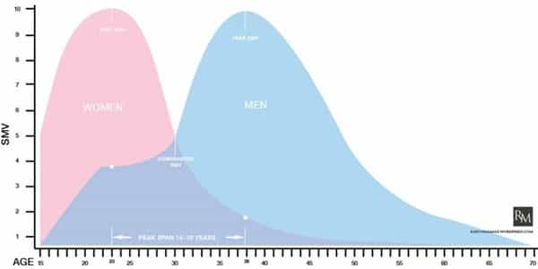

André is a young European who left his decaying country in 2012 for greener pastures. He enjoys exploring subterranean places, reading about a host of interconnected topics, and yearns for Tradition.


Considered from a long memory point of view, feminism is quite recent, owing its exponential development to a very specific modern historical context. The matriarchal tribes Leftist anthropologists have been crazy about are but a historical aberration. All civilizations and peoples who were able to go beyond the small tribe stage and erect kingdoms or empires were patriarchal.
The irony of modernity lies in men having invented most of what exist out there, toiled in steaming factories, dug up dark mine drifts, fought in bloody wars, and managed to produce an incredible wealth—for the result of work to be taken away by entitled, ungraceful womyn.
If you look closely, the suffragettes and their ilk did not revolt because “oppression of women”, but to the contrary, in a context where men were already weak and womanly ways were already dominant. Nineteenth century American prostitutes had many things wives did not—like money, glamour, the ability to travel and fuck many wealthy guys, and even men’s attention—and they have set a precedent.
Likewise, if you look at the Belle Époque (roughly 1870-1914) art, it overflows with sensual, bewitching beautiful women, accompanied by high-status or wealthy men orbiting around. Men of these times had already turned into weaklings, proud to be mesmerized by some lipstick-wearing bitch. Far from being “oppressive”, these men were dependent, and spoiled women could easily gauge money and power from them.
This trend of female takeover, be it through seduction, subtle social power-grabbing or direct threats against men, has shaped many of last century changes. Our masculine potentialities were buried in taboo and oblivion by the blue pill, and now that we are developing ourselves again, it is becoming increasingly obvious that we have to roll back the degeneracy and illegitimate powers we were taught to take for granted. With this is mind, we need a traditional, extra-modern perspective from which to stand and strike hard at the Libtard Church.
The Law Code of Manu, an ancient Hindu legal code, is exactly the kind of content that can feed a “neo-traditional” perspective. Its rich contents led me to write on it twice on ROK, and now is a third and last Law of Manu piece specifically about relations between the sexes. What did an allegedly supra-human lawmaker say on women—and that allowed for a civilization standing the test of time?
This is something modernity wanted us to forgive. “Amour, amour!”, cries the nineteenth century bourgeois literature, full of romantic tales and of men penning out long pages about their passion for this or that girl. Novels and poetry from this time are sometimes so full or marshmallow, of one-itis and of pompous prose they are almost disgusting.
Were these infatuated men “free to love whom they wanted”—especially when they were, not incidentally, high-status guys willing to marry down? Of course not: lacking mastery of themselves, they were ensnared and led to believe that their bizarre state of obsession over that-girl-I-am-loving-oh-so-passionately was superior to pondered marriages. Behind the artsy celebration of “progress”, “freedom” and “love” loomed pure seduction power.
Such trends did not exist in Ancient India. There, law enforcers at least were aware of the transactional nature of mating and of the necessity to pair a man and a woman of a relatively equal status. Although men of a higher caste could marry down in case of a shortage (3.13), the practice is disregarded, and Manu explicitly warns that “by contracting aberrant marriages… respectable families quickly come to ruin” (3.63).
The Code is made so that men are more or less limited, but also acknowledged and protected reasonably. Men’s right to sexual and romantic gratification is stated (3.45). A man, the Code says, should seek for a spouse of his own caste and with the “right bodily characteristics” (3.4). Families are encouraged to behave in a respectable manner, which allows them to uphold a fine sociability and offer good girls to marry.
Thus, as everyone strives for virtue and offering quality—instead of predatorily taking away—a decent man has serious chances to find a decent girl. As men strove to be able to “buy” the woman they deserved and women at least maintained their capital, the latter did not wield too much power, could not impose its seduction games, and men could focus on building value properly instead of painfully adapting to the ways of the HR/nightclub sororities.

At the peak of their beauty, sexiness and fertility, women are of a higher value. Our reptilian brain knows about it, which gives a 18-25 years old woman a high sexual market value in a “free sexual marketplace” society, and so did the Code, that also knew about how girls could easily be spoiled if allowed to party down their prime years and get creamed in by massive amounts of dick.
To regulate the market and prevent an unholy alliance between party girls and notches-racking assholes, the Code states that a man must be older than the girl he woos: “a 30 year old man should marry a charming girl of 12 years, or an 18 year old, a girl of 8 years or sooner” (9.94). In other words, instead of giving way to the temptation and throwing themselves in a cutting-throat competition for notches, young men have to master their own desires while getting a betrothal with younger girls. Then, as a well-deserved reward, they get a good spouse, each of them peaks at the same time, each can naturally enjoy the other—the 30 year old enjoys the young female who enjoys an older, dominant male—and build a home.
This is akin to what Aristotle wrote about marriage: “women should marry when they are about 18 years of age, and men at 37; then they are in the prime of life, and the decline in the powers of both will coincide.” (Politics, 1335a25)
The Code states:
Even in her own home, a female—whether she is a child, a young woman, or an old lady—should never carry out any task independently. As a child, she must remain under her father’s control; as a young woman, under her husband’s; and when her husband is dead, under her sons’. She must never seek to live independently. (5.147-8)
If women depend from their families and ought to be traded or cared of by men, this makes pairing easier and more straightforward. Being traded, women can focus on their own value and avoid being damaged by their own foolish choices. Also, as they are hypergamic, women ought to be made socially inferior for their own satisfaction: if they get equal to men, they will despise men of equal value and want for a higher value one at the expense of whom they should pair with.
Women belonging to their families are limited in their ability to lure any male into their traps: if they do, they will likely get the wrath of their responsible relatives.
Day and night men should keep their women from acting independently; for, attached as they are to sensual pleasures, men should keep them under their control. (9.2)
Drinking, associating with bad people, living away from the husband; travelling, sleeping, and staying in the houses of others—these are the six things that corrupt women… Lechery, fickleness of mind, and hard-heartedness are innate in them… Recognizing this, a man should make the utmost effort at guarding them. (9.13-6)

Even then, it seems that hubristic hypergamy had already started to rear its ugly head at the time when the Law Code was written down, for it explicitly warns against the temptation to abandon one’s husband for a man of higher social status:
When a woman abandons her own husband of lower rank and unites with a man of higher rank, she only brings disgrace upon herself in the world and is called ‘a woman who has had a man before.’ By being unfaithful to her husband, a woman becomes disgraced in the world. (5.163-4)
The Ancients knew well about the conditions necessary for a marriage to be auspicious, and the relative equality of status as well as the stability of the union were doubtlessly necessary. Some women, at least, had let their burning desire unravel the social fabric and betrayed their home to get the “higher” man, for if it had not been so the Code would not warn against it.
Some things ought to be checked as relatively equal between a husband and a wife, such as the caste, social value, or being in one’s prime, for the marriage to work well, with the exception of “times of adversity” when higher caste men can marry down. Everything, though, does not have to be the same.
A woman realizes herself and flourishes through her place in the family. She ought to be dutiful to have her proper center and dignity. Therefore,
Though he may be bereft of virtue, given to lust, and totally devoid of good qualities, a good woman should always worship her husband like a god. For women, there is no independent sacrifice, vow, or fast; a woman will be exalted in heaven by the mere fact that she obediently served her husband. (5.154-6)
On the other hand, a husband can go away for years on which his wife ought to maintain the home, provided he secures some resource for her to live on (9.74-6). He is also free to repudiate his wife if she loathes him without a proper reason. Specific reasons are specified by the Code, such as if he turns into an unrepentant alcoholic, or becomes “foul-mouthed” (9.81).
Men and women’s respective roles and different, complementary, and unequal. Modernists should get over it instead of wrecking social life in the name of an equality between non-existent abstract individuals.
A man’s striving expresses mostly on the public scene, outside from the house, while the man’s quest finds its center in himself and larger projects. A man ought to be able to thrive outside, whereas his wife, by being supportive, realizes herself at the same time that she helps him. Also note that risks are properly shared here, as the woman may seem in a more risky situation at home, when the husband meets with the risks outside.
Just as social castes are supposed to expand and enshrine inner vocations, names have to say something about their bearer. For girls, names act as a sort of tutor or landmark:
Girls’ names should be easy to pronounce and without fierce connotations, have a clear meaning, be charming and auspicious, end in a long final syllable, and contain a word for blessing. (2.33)
Also, dependence from family and husband do not mean lack of self-agency: women too have quests to pursue—which makes self-improvement as relevant to them as it is to us.
A woman who controls her mind, speech, and body and is never unfaithful to her husband attains the worlds of her husband, and virtuous people call her a ‘good woman.’ (5.163)
[Wives should be employed] in the collection and the disbursement of his wealth, in cleaning, in meritorious activity, in cooking food, and in looking after household goods. When they are kept confined within the house by trusted men, they are not truly guarded; only when they guard themselves by themselves are they truly well-guarded. (9.11-2, emphasis mine)
This is consistent with the three purposes Roosh identified.
That the modern trends of “emancipation” of women would actually unravel into a catastrophe for most men, not to mention our civilization as a whole, could have been predicted by the wise men living millennia ago. Particular vocations, social equilibrium, good chances and fair trade were ensured by the wisdom and fidelity of traditional men.
As we toil for taking back our institutions, countries and civilization, it is also necessary to glean discernment from (almost) timeless Scriptures. Odds are, the most familiar we become with antique wisdom, the more specifically modern trends will look like blind or monstrous deviations. This may be unsettling. I could bet my last penny, though, that in the long run it will be understood as a necessary step for getting outside the rotten world we were born in and avoid falling for the same mistakes again and again.
Read Next: Modern Marriage Is Rent-Seeking Hell